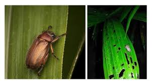

Daftar Hama
| No | Nama Hama | Gambar | Daun | Akar | Batang | Buah | Bunga | Ciri Khusus |
|---|---|---|---|---|---|---|---|---|
| 1 | Ulat Api |

|
Daun berlubang, terdapat ulat berwarna merah atau cokelat dengan bulu tajam | Mengering | Terkikis | Bercak Kuning | ||
| 2 | Kumbang Tanduk | Batang berlubang di pangkal, tanaman muda rusak atau patah | Berlubang | |||||
| 3 | Tikus | Buah Rusak Atau Hilang, Terdapat jejak gigitan pada tandan buah | ||||||
| 4 | Tungau Merah | Daun berwarna kecoklatan dengan bercak kecil, daun mengering dan keriting | Kering | |||||
| 5 | Ulat Kantong | Daun Berlubang Seperti Terbakar, Daun berlubang kecil, ulat bersembunyi dalam kantong atau jaring | ||||||
| 6 | Kumbang Daun |  | Daun Berlubang Besar, Gigitan berbentuk seperti gigitan busur | |||||
| 7 | Kutu Daun | Daun Tampak Kusam, Ada kutu kecil yang mengisap cairan daun | ||||||
| 8 | Rayap |

|
Akar Dan Pangkal Batang Dimakan, Tanaman menjadi lemah dan mudah roboh | |||||
| 9 | Kumbang Bubuk | Batang Berlubang Kecil-Kecil, Batang berlubang kecil-kecil, terdapat serbuk kayu di sekitar batang | ||||||
| 10 | Belalang | Daun Robek, Daun terlihat robek tidak beraturan, bekas gigitan lebar | ||||||
| 11 | Kumbang Kawat |

|
Daun Berlubang, Daun berlubang, akar berlubang dengan tanda mengering | |||||
| 12 | Orong-Orong | Layu, Akar Rusak, Akar digerogoti sehingga tanaman mudah layu |